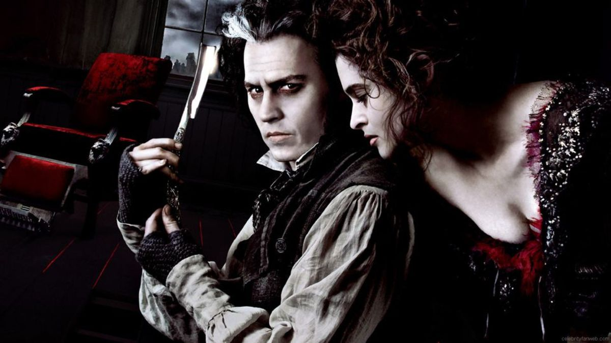

"Enemigos Públicos: La mayor oleada criminal de Estados Unidos y el nacimiento del FBI, 1933-34" de Bryan Burrough no es solo una crónica cautivadora de las hazañas de forajidos famosos, sino también una narración vívida que sumerge a los lectores en los tumultuosos años en los que personajes como John Dillinger, Bonnie y Clyde, y la Banda Barker-Karpis deambulaban por el paisaje estadounidense. Burrough captura minuciosamente las emocionantes persecuciones y las batallas de alto riesgo entre los encargados de hacer cumplir la ley y los notorios gángsters, colocándote justo en el corazón de la acción. Este libro revela el caótico surgimiento del FBI, transformándolo de una agencia incipiente en una fuerza formidable bajo el liderazgo de J. Edgar Hoover, en medio de un telón de fondo de agitación social y desesperanza económica. Al adentrarte en estas páginas, no solo encontrarás relatos emocionantes de crimen y justicia, sino que también obtendrás una visión de los profundos cambios culturales que moldearon a Estados Unidos en una de sus eras más turbulentas. Prepárate para ser fascinado por una historia donde la ley y el desorden chocan, forjando el mundo moderno de la persecución criminal...
| Enemigos publicos |
|---|
|  |
En esta versión de Burton del clásico de Lewis Carroll, interpreta al Sombrerero Loco |